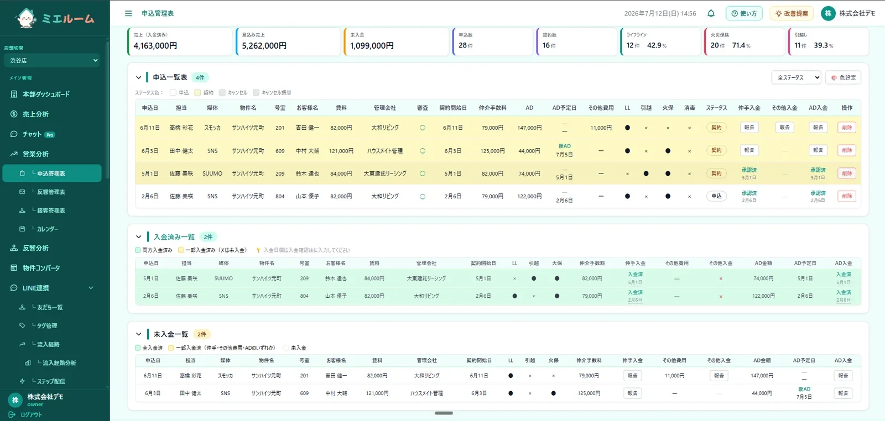
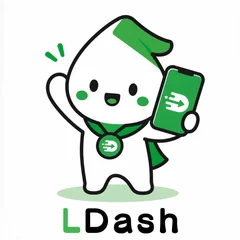

ファイルが増殖し、最新がどれか分からない。集計のたびに手が止まる。共有もこわい。
機能は多いのに、自社のやり方には少し足りない。使わない機能の費用だけがかさむ。
“あの人しか分からない”作業が点在。引き継ぎも、AI活用も、そこで止まってしまう。
大げさなシステムではなく、現場が毎日さわる軽くて堅いアプリ。AIは「同僚」として、必要なところにだけ差し込みます。
LINE連携・通知・決済まで。店舗・教室・クリニックの受付をまるごとデジタルに。
在庫・案件・勤怠などの管理を、ExcelからWebへ。無理なく移行できる設計で。
問い合わせ対応、メール下書き、議事録から提案書まで。社内データと組み合わせて自動化。
バラバラのツールをつなぐ自動化。手作業のコピペを、しくみで消していきます。
商談・配信・分析までを一つに。顧客接点を散らかさず、見える状態に保ちます。
監視・改修・バックアップを月額で。つくって終わりにしない、続けられる体制。
予約・レジ・カルテ・日報・チャット。バラバラに契約しているツールを、御社のやり方に合わせた1つのシステムに。開発費30万円〜・月額3万円〜（保守込み）。
施術を記録すると回数券の残りが減り、その日の売上とレジ締めにそのまま反映。
お会計で指名売上と歩合を自動計算。次の来店の目安日が来たお客様を一覧に。
回数券・会員の残りと施術記録、担当者ごとの売上を1つの画面で。
成約を入れた瞬間に、本人の月間・年間成績と社内ランキングが更新。日報と社内チャットも同じ場所に。
見積から発注・請求までを現場ごとにつなぎ、その現場の粗利がいつでも見える。
欠席の連絡から振替の空き枠を出し、講師のコマ数と給与計算にもそのまま反映。
各店が締めを入力すると、本部で全店の売上・人件費率・原価率が毎日並んで見える。
整備の記録から次の車検・点検日を出し、時期が来たお客様の一覧と案内文を用意。
設計・実装・テストにAIを取り入れ、品質を保ったままスピードを上げます。小さなPoCから始められます。
分業による“伝言ゲーム”をなくし、相談から運用までを同じチームで。意思決定が速く、ブレません。
Next.js + PostgreSQL を中心に、過剰でも貧弱でもない構成。長く安心して使える土台をつくります。
受託だけでなく、自分たちのプロダクトを開発・運用しています。実際に使い、磨いた知見で、あなたの業務改善も支えます。

反響・接客・売上・申込・契約書類までひとつに。1〜複数店舗の賃貸仲介に特化。Excel・LINEのバラバラ管理から卒業。
店舗オーナー自身がHPを運用できるCMS。AIブログ自動投稿・必須コンテンツの公開チェックまで。

ステップ配信・セグメント・リッチメニュー・フォーム・自動化を一つに。AIネイティブのLINE運用基盤。
順位ジオグリッド・口コミAI返信・レポート自動配信。独自ツールで“見える”MEO運用代行を実現します。
いまの業務と困りごとをお聞きします。「何ができる？」の段階から大歓迎です。
本当に必要な範囲を一緒に見極め、フェーズと費用を明確にします。小さく始められます。
画面で触れる状態をつくり、認識を合わせながら進めます。手戻りを最小限に。
AI支援開発で短工期・高品質に。テストして、安心して使える形でお渡しします。
監視・改修・改善提案を月額で。使いながら、もっと良くしていきます。
開発費（初期費用）30万円〜、月額3万円〜です。要件に応じてフェーズを区切ってお見積もりします。ヒアリングから公開作業まで必要なものは初期費用に含めます。月額にはサーバー・保守・バックアップと、1時間程度で終わる小さな修正（月1回まで）が含まれます。それより大きな機能の追加は、都度お見積もりします。
Claude CodeはAnthropic社のAIコーディング支援ツールです。設計・実装・テストの各工程にAIが同席することで、品質を保ったまま短い工期で「触れる形」に到達できます。当社は全工程でAI支援開発を活用しています。
業務の範囲によりますが、小さなPoC（試作）であれば最短2週間で「触れる形」をご用意できます。小さく作って、使いながら直す進め方をおすすめしています。
業務を理解しようとするか、小さく試せる進め方か、相談から運用まで一貫しているか、公開後の改善に付き合うか、の4点が重要です。詳しくはAI業務改善アプリ開発 完全ガイドにまとめています。